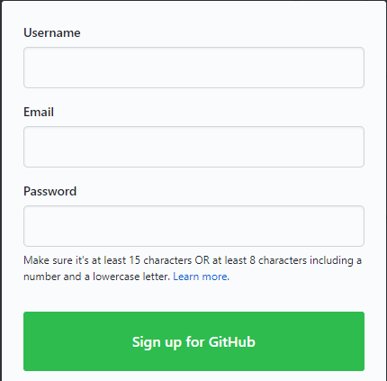
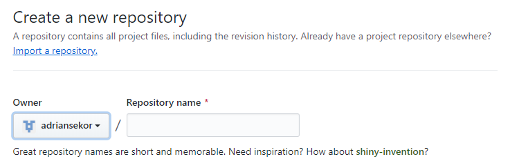
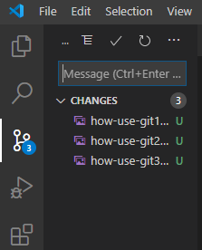

Git és un software de control de versiones diseñado por Linus Torvalds, pensando en la eficiencia
y la confiabilidad del mantenimiento de versiones de aplicaciones cuando éstas tienen un gran número de archivos de código fuente.
Registrarte en unos de los principales gestores de git en nuestro caso usamos Github
Clicamos en New para crear un nuevo repositorio Git
El siguiente paso seria añadir a los miembros del equipo iriamos a Settings/Manage Access
Ahora le damos a Invite Collaborator y ponemos los usuarios
Dado este momento cada colaborador del proyecto deberá aceptar en su correo la invitación
Nosotros en esta caso vamos a configurar Git con Visual Code Studio entonces abrimos el programa.
Vamos a donde pone Git Source control Clone git repositories copiamos el enlace de nuestro proyecto.
Seleccionamos la carpeta en la que queremos hacer la copia del proyecto y le damos a sincronizar entonces ya
tenemos habilitado nuestro Visual con Git podemos hacer un commit + push para probarlo :)
 Volver